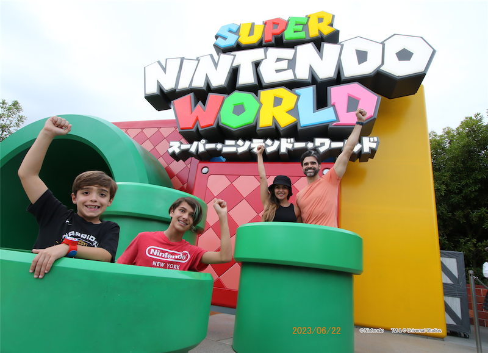
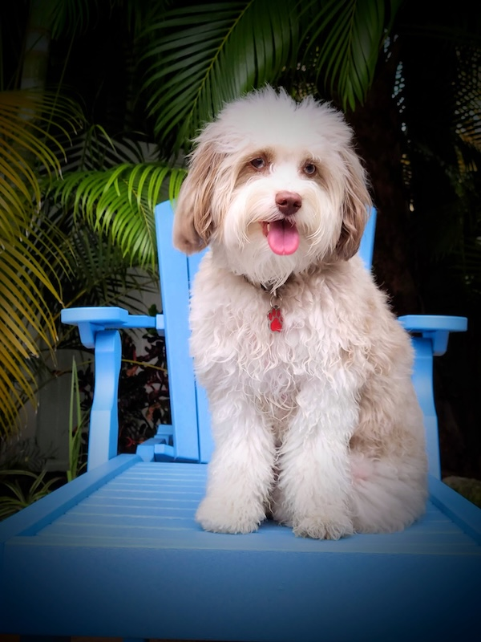
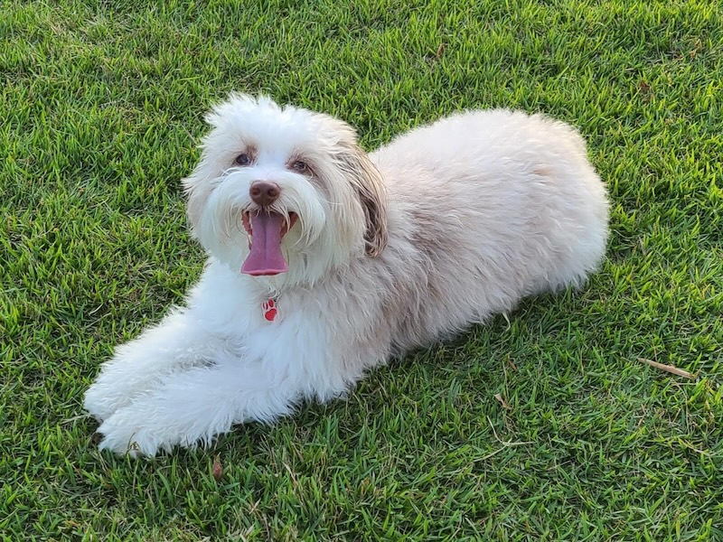
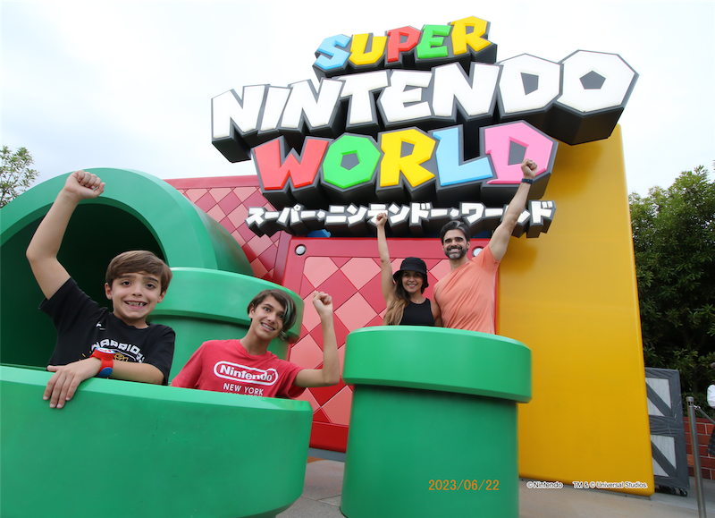
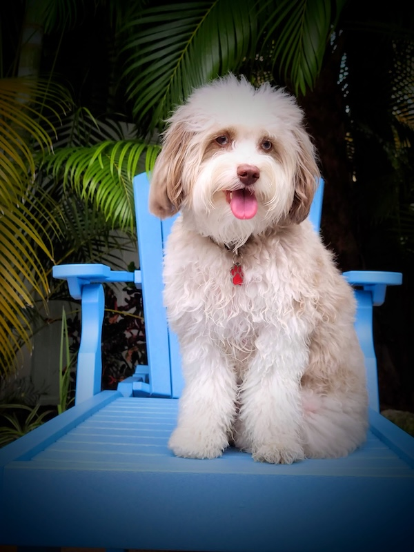
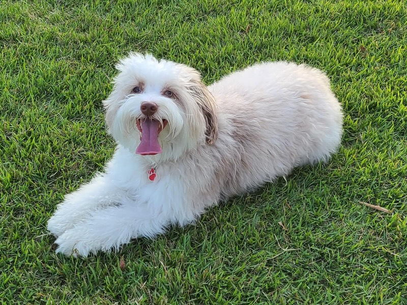

About Me
I am a seasoned Technical Program Manager with over 20 years of experience leading complex programs across diverse industries. I am customer-obsessed, always striving to anticipate and exceed customer needs while delivering remarkable end-to-end experiences. I thrive at the intersection of technology, business, and customer satisfaction, leveraging a growth mindset to solve challenges as opportunities to learn and grow. My collaborative and inclusive approach ensures we are always better together, creating solutions that align with strategic goals and deliver impactful outcomes.
Key Highlights
- Successfully launched the VisaGo app for the Paris Olympics, achieving 102k downloads and exceptional user ratings, demonstrating a customer-obsessed approach.
- Led agile transformation for 20+ global teams, enhancing team velocity by 20%, embodying the ship-to-learn ethos through iterative improvements.
- Implemented resource management frameworks and tools, boosting operational efficiency by 50% within 6 months, highlighting my ownership of outcomes.
- PMP-certified with a proven track record in aligning technical execution with strategic objectives, always collaborating to be better together.
Personal Information
Outside of work, I enjoy spending quality time with my family, exploring nature, and capturing moments through photography. I’m an avid soccer fan and love playing casual games with friends on weekends. My inclusive mindset extends to all aspects of life, embracing diversity and fostering connections that enrich both personal and professional experiences.
 




